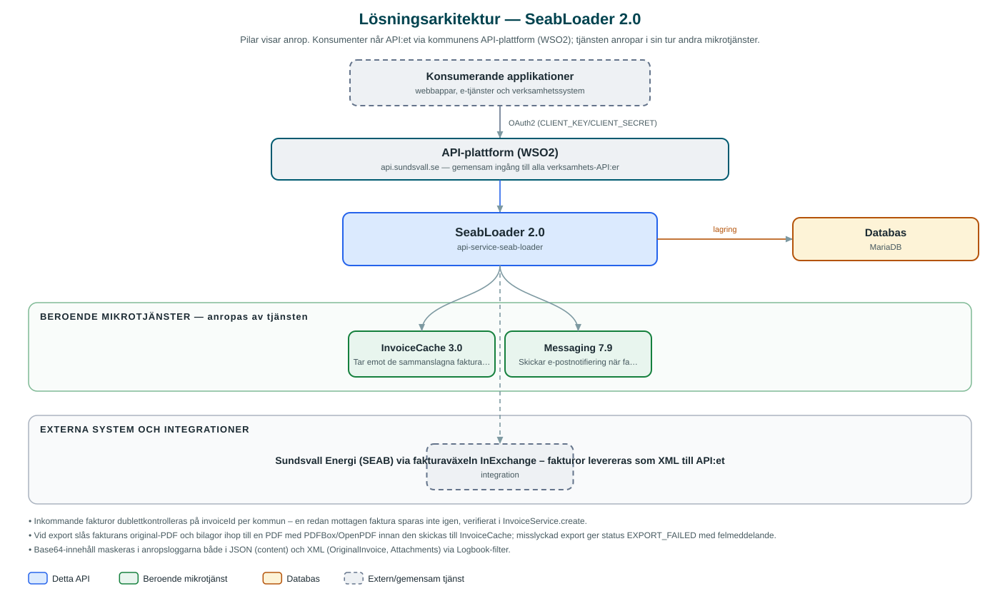

SeabLoader
Tar emot fakturor från Sundsvall Energi (SEAB) i XML-format, sätter ihop faktura-PDF:er och läser in dem i InvoiceCache.
Om API:et
SeabLoader är länken mellan Sundsvall Energis fakturaflöde och kommunens gemensamma fakturalager InvoiceCache. Fakturor tas emot via API:et som XML i InExchange-format och lagras i tjänstens databas, där dubbletter av redan mottagna fakturor sorteras bort automatiskt.
Ett schemalagt exportjobb bearbetar sedan de mottagna fakturorna: fakturans original-PDF och eventuella bilagor slås ihop till en enda PDF, och resultatet skickas till InvoiceCache där fakturan blir sökbar och nedladdningsbar för andra applikationer. Fakturor som inte kan exporteras markeras med felstatus och felmeddelande.
Tjänsten sköter sin egen hushållning: ett rensningsjobb tar bort färdigbehandlade fakturor ur databasen, och ett notifieringsjobb skickar e-post via Messaging när det finns fakturor som fastnat i felstatus. Jobben kan även triggas manuellt via API:et.
Det här gör API:et
- Mottagning av fakturor – Tar emot fakturor i XML-format (InExchange) via API:et och lagrar dem för vidare bearbetning, med automatisk dublettkontroll.
- PDF-sammanslagning – Fakturans original-PDF och bilagor slås ihop till en enda PDF innan export.
- Export till InvoiceCache – Schemalagt jobb som skickar bearbetade fakturor till InvoiceCache där de blir tillgängliga för andra applikationer.
- Felnotifiering – Schemalagd kontroll som skickar e-post via Messaging när fakturor hamnat i felstatus.
- Databasrensning – Schemalagt jobb som rensar bort färdigbehandlade fakturor ur databasen i batchar.
- Manuell jobbkörning – Export-, rensnings- och notifieringsjobben kan triggas på begäran via API:ets jobbresurser.
API-dokumentation
API:ets samtliga resurser, parametrar och datamodeller finns beskrivna i en OpenAPI-specifikation som är hämtad ur källkodsförrådet. Den kan utforskas interaktivt i Swagger UI eller laddas ner som YAML.
Teknisk dokumentation
Nedan beskrivs hur tjänsten är uppbyggd, vilka andra tjänster den anropar och vad som krävs för att driftsätta den. Informationen är härledd ur källkoden och dess konfiguration på GitHub.
Arkitektur

API:et är en mikrotjänst (Java 25, Spring Boot via kommunens gemensamma tjänsteplattform dept44 (8.0.8), byggd med Maven). Konsumenter når tjänsten via kommunens gemensamma API-plattform (WSO2) på api.sundsvall.se – tjänsten anropas aldrig direkt. Tjänsten anropar i sin tur andra mikrotjänster i kommunens tjänstelandskap. Lagring: MariaDB med Flyway-migrationer; mellanlagrar mottagna fakturor med status tills de exporterats och rensats. Övriga integrationer som förekommer i koden: Sundsvall Energi (SEAB) via fakturaväxeln InExchange – fakturor levereras som XML till API:et.
Teknikstack
- Språk: Java 25
- Ramverk: Spring Boot via kommunens gemensamma tjänsteplattform dept44 (8.0.8), byggd med Maven
- Databas: MariaDB med Flyway-migrationer; mellanlagrar mottagna fakturor med status tills de exporterats och rensats
- Övrigt: Apache PDFBox och OpenPDF för PDF-sammanslagning, schemalagda jobb med Shedlock-låsning, Resilience4j (circuit breakers)
Beroenden till andra mikrotjänster
Tjänsten anropar följande mikrotjänster. Versionerna är hämtade ur källkodens integrationsklienter.
| Tjänst | Version | Användning |
|---|---|---|
| InvoiceCache | 3.0 | Tar emot de sammanslagna faktura-PDF:erna för lagring och vidare åtkomst. |
| Messaging | 7.9 | Skickar e-postnotifiering när fakturor hamnat i felstatus. |
Konfiguration och driftsättning
- application.yml med URL och OAuth2-klientuppgifter för InvoiceCache och Messaging
- MariaDB-anslutning; databasschemat versionshanteras med Flyway
- Cron-scheman för export-, rensnings- och notifieringsjobben
- Avsändar- och mottagaradress för felnotifieringar via e-post
Noterbart ur källkoden
- Inkommande fakturor dublettkontrolleras på invoiceId per kommun – en redan mottagen faktura sparas inte igen, verifierat i InvoiceService.create.
- Vid export slås fakturans original-PDF och bilagor ihop till en PDF med PDFBox/OpenPDF innan den skickas till InvoiceCache; misslyckad export ger status EXPORT_FAILED med felmeddelande.
- Base64-innehåll maskeras i anropsloggarna både i JSON (content) och XML (OriginalInvoice, Attachments) via Logbook-filter.
- Rensningsjobbet tar bort färdigbehandlade fakturor i chunkar för att inte belasta databasen – verifierat i DatabaseCleanerService.
Källkod
Källkoden är öppen och finns hos Sundsvalls kommun på GitHub. I källkodsförrådet finns även instruktioner för att klona, konfigurera och starta tjänsten i egen miljö.